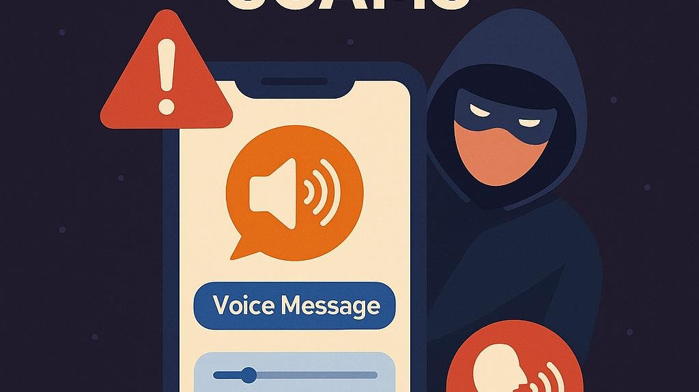

You get a WhatsApp voice note. It sounds like a friend, a cousin, or someone from your office. They sound rushed and a little stressed. Then comes the ask: "Please send me the code you just received," or "I'm in trouble, send money now." Because you heard a voice, you relax. That is the whole trick.
In this guide
What is the WhatsApp voice note verification scam?
It is not one single trick. It is a pattern where a voice note is used as the "proof" that a request is genuine. Most reports of it fall into three versions, and they often overlap.
Version 1: The "I sent my code to you by mistake" voice note
A hacked account of someone you know messages you, often saying a code was sent to your number by accident and asking you to forward it. That code is your own WhatsApp registration code. If you send it, the scammer can register your number on their phone and lock you out.
Version 2: The cloned-voice "friend in trouble" note
The note claims an emergency such as a lost phone, an accident, or a bill that must be paid right now. AI voice tools can imitate a voice, so it may sound familiar. Warning signs include a number you do not recognise, a voice that sounds slightly off, and a refusal to speak on a normal call.
Version 3: The "voice message" link or file
Some messages say you have a voice message and ask you to tap a link, or install a file, to listen. A real voice note plays inside WhatsApp. If you are sent to another website or asked to download something, treat it as a trap.
| Version | What they want | Biggest red flag |
|---|---|---|
| "Code sent by mistake" | Your six-digit WhatsApp code | Any request to forward a code |
| Cloned-voice emergency | Money, fast | Urgency plus "don't call me" |
| Fake voice message link | Your login details or a malicious install | A link or file needed to "listen" |
Red flags to look for in a voice note
- It asks for a six-digit code, a PIN, or an OTP, whoever it seems to be from.
- It comes from a new or unknown number that claims to be someone you know.
- It creates urgency: "right now," "before 5 minutes," "don't tell anyone."
- The voice sounds flat, robotic, or slightly different, or the person never speaks live.
- It asks you to move to another app, or to tap a link or install something.
- It asks for money by UPI, gift cards, or crypto to a new account.
Why "just ask for a voice note" is no longer enough
Older safety advice says to ask a suspicious contact to send a voice note, or to call them. Calling is still the best check. But a voice note alone is weaker now, because a cloned voice can be used to make one. Some voice tools are reported to need only a short audio sample, so it is also wise not to answer unknown callers with long recorded replies. Treat a voice note as a clue, not proof.
What works better is something a scammer cannot easily fake: a live two-way conversation, a video call, or a private question only the real person could answer.
How to verify a suspicious voice note, step by step
- Stop before you reply. Do not send a code, money, or a screenshot. A few minutes of delay costs you nothing.
- Call the person on the number saved in your phone. Not the number in the chat, and not a number given in the voice note. If their account was hacked, the real person will confirm it.
- Ask for a video call. A scammer using a cloned voice usually cannot do a live video call as the real person.
- Ask a private question. Something not on social media, such as "What did we eat last time we met?"
- Check with another family member or colleague if you cannot reach the person. Use a different chat, not the same thread.
- Do not open any link or file sent as a "voice message." Real voice notes play directly in the chat.
- Block and report the sender inside WhatsApp: open the chat, tap the contact name, then Report.
What to do if you already shared the code or sent money
If you shared your WhatsApp code
- Open WhatsApp and register again with your phone number. Enter the new six-digit code you receive by SMS. This should log the other person out.
- If a two-step verification PIN you do not know is asked, the scammer may have set it. WhatsApp may make you wait up to seven days before you can continue without it, so contact WhatsApp support meanwhile.
- Once you are back in, turn on two-step verification (Settings > Account > Two-step verification) and add a recovery email.
- Check Linked Devices and log out of any you do not recognise.
- Warn your contacts that your account was misused, so they ignore any requests sent from it.
If you sent money
Act within minutes if you can. Call the National Cyber Crime Helpline 1930 in India, tell your bank to flag the transaction, and file a complaint at cybercrime.gov.in. Keep screenshots of the chat, the sender's number, and your payment receipt. No one can promise a refund, but quick reporting gives the best chance of stopping the transfer.
How to protect your WhatsApp account before anything happens
- Turn on two-step verification. It adds a PIN that is asked when your number is registered on a new device.
- Add a recovery email you control, and never click reset links you did not request.
- Review Linked Devices every few weeks.
- Agree a family code word that only close family knows, to use in a real emergency.
- Limit who can see your profile photo and status in Settings > Privacy, so scammers have less to copy.
Quick checklist before you act on any voice note
- Is it asking for a code, PIN, or OTP?
- Is the number new or unknown?
- Is it rushing me or asking for secrecy?
- Did I confirm on a live call or video call?
- Is it asking me to tap a link or install a file?
If any answer is "yes," pause and verify first.
Conclusion
The voice in the note is the bait, not the proof. WhatsApp scams keep changing, but the safe habit stays the same: never share your code, slow down, and confirm through a separate live channel. These tricks also appear outside WhatsApp, so see our guides on fake GST messages and fake PAN card update messages.
Got a message you are unsure about? Paste it into our free checker for a quick first read.
Frequently asked questions
What is the WhatsApp voice note verification scam?
It is a family of scams where a voice note, often in a familiar-sounding voice, is used to pressure you into sharing your WhatsApp six-digit code, sending money, or tapping a link. The voice is there to make the request feel trustworthy.
Will WhatsApp ever ask me for my verification code?
No. WhatsApp does not ask you to send your six-digit registration code or your two-step verification PIN to anyone, including friends and family. Anyone who asks for it is trying to take over your account.
Can scammers fake the voice of someone I know?
Yes. AI voice cloning tools can imitate a person's voice, so a voice note alone is no longer proof of identity. Confirm through a live call or video call on the number you have saved.
What should I do if I already shared my WhatsApp code?
Open WhatsApp, enter your phone number and the new six-digit code you receive by SMS. This logs the other person out. Then turn on two-step verification, check Linked Devices, and warn your contacts.
How do I report a WhatsApp scam in India?
If money was lost, call the national cybercrime helpline 1930 immediately and file a complaint at cybercrime.gov.in. Also use Block and Report inside WhatsApp and inform your bank.
Further reading
Got a suspicious WhatsApp message you want checked?
Run it through the checker